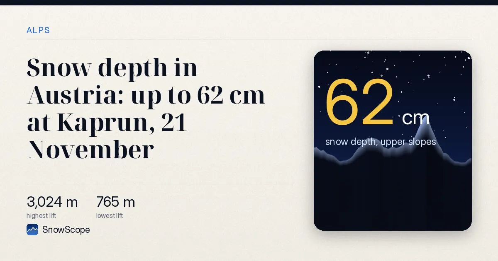
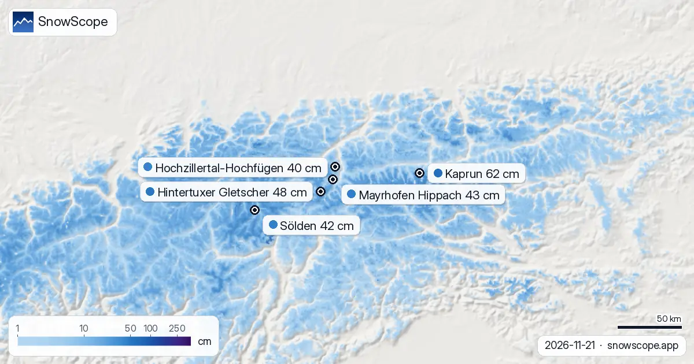

Snow depth in Austria: up to 62 cm at Kaprun, 21 November
Kaprun has 62 cm on its upper slopes this Saturday, the most in Austria.
See the live snow forecast for Kaprun in the SnowScope appSnow depth, powder alerts and the 3D map, free.
Snow on the upper slopes
Across all 12 resorts on this list, the middle value is 40 cm on the upper slopes.
The rest of the top five: Hintertuxer Gletscher (48 cm), Mayrhofen Hippach (43 cm), Sölden (42 cm) and Hochzillertal-Hochfügen (40 cm).
| Resort | Snow depth | New snow, 72 h | Coming, next days | Top |
|---|---|---|---|---|
| Kaprun | 62 cm | 18 cm | 11 cm | 3,024 m |
| Hintertuxer Gletscher | 48 cm | 19 cm | 17 cm | 3,245 m |
| Mayrhofen Hippach | 43 cm | 16 cm | 15 cm | 2,468 m |
| Sölden | 42 cm | 22 cm | 18 cm | 3,247 m |
| Hochzillertal-Hochfügen | 40 cm | 17 cm | 15 cm | 2,374 m |
| Zillertal Arena | 40 cm | 17 cm | 14 cm | 2,501 m |

Resort by resort
Kaprun: 62 cm on the upper slopes (top lift 3,024 m), 18 cm new in 72 hours, 11 cm more by 24 November.
Hintertuxer Gletscher: 48 cm on the upper slopes (top lift 3,245 m), 19 cm new in 72 hours, 17 cm more by 24 November.
Mayrhofen Hippach reports 43 cm up top; the lifts reach 2,468 m. Fresh snow: 16 cm in three days, forecast 15 cm by 24 November.
Sölden: 42 cm on the upper slopes (top lift 3,247 m), 22 cm new in 72 hours, 18 cm more by 24 November.
What fell in the last three days
The last three days brought Ischgl 30 cm, Serfaus Fiss Ladis 26 cm and Sölden 22 cm.
Snow on the way
Coming up by 24 November: Ischgl 26 cm, Serfaus Fiss Ladis 23 cm and Sölden 18 cm.
Beyond the groomers
With up to 30 cm of fresh snow, the first runs off the groomers will be soft. Read the local avalanche bulletin first and keep to slopes you know: fresh snow on a thin early base hides rocks.
New snow on a cold base means the best piste conditions of the week, and the steep runs ski well again.
If you have two days
For a short trip, Ischgl is the pick: 30 cm on the upper slopes now and 26 cm more by 24 November.
For a weekend, the German uplands are within a day trip by car; for Austria, plan at least three nights.
Tips for skiers
- Winter tyres or chains for the last kilometres to the higher resorts.
- Early season: wax your skis, the snow is often abrasive.
- Off-piste only after reading the avalanche bulletin.
About these numbers
Resort snow depths are the deepest snow on the resort's upper slopes on the date shown; they are estimates for an area, not a measurement at one point. Forecasts can change. Always read the official avalanche bulletin before going off-piste.
Cite this report
For research, teaching or the press: the numbers and charts are free to reuse under CC BY 4.0 with this citation.
SnowScope (2026), Snow depth in Austria: up to 62 cm at Kaprun, 21 November, https://snowscope.app/blog/en/2026/11/sneeuw-oostenrijk-skigebieden-21-november-2026.html, accessed 2026-11-21
SnowScope (Atlas Labs). (2026, November 21). Snow depth in Austria: up to 62 cm at Kaprun, 21 November. SnowScope snow reports. https://snowscope.app/blog/en/2026/11/sneeuw-oostenrijk-skigebieden-21-november-2026.html
BibTeX
@misc{snowscope2026sneeuwoostenrijkskigebie,
author = {{SnowScope (Atlas Labs)}},
title = {Snow depth in Austria: up to 62 cm at Kaprun, 21 November},
year = {2026},
month = nov,
howpublished = {\url{https://snowscope.app/blog/en/2026/11/sneeuw-oostenrijk-skigebieden-21-november-2026.html}},
note = {Published 2026-11-21 11:39 UTC; accessed 2026-11-21}
}· CC BY 4.0 · Methods, data and tools →
Kaprun: snow and temperature by height, this winter vs last (tools) →
Follow Kaprun
Free: a message when fresh snow is coming, and the forecast every morning.
More snow reports

Next week's fresh snow in Kitzbühel: 3–34 cm on the upper slopes and 2–14 cm at the base (23–29 November 2026), best day, best slopes and how sure the forecast is.

Ischgl snow forecast for 23–29 November 2026: 18 cm at the top (3–34 cm), 14 cm at the base, snowiest day Thursday 26 November, with neighbours compared.

Hintertux snow forecast for 23–29 November 2026: 14 cm at the top (3–24 cm), 12 cm at the base, snowiest day Wednesday 25 November, with neighbours compared.